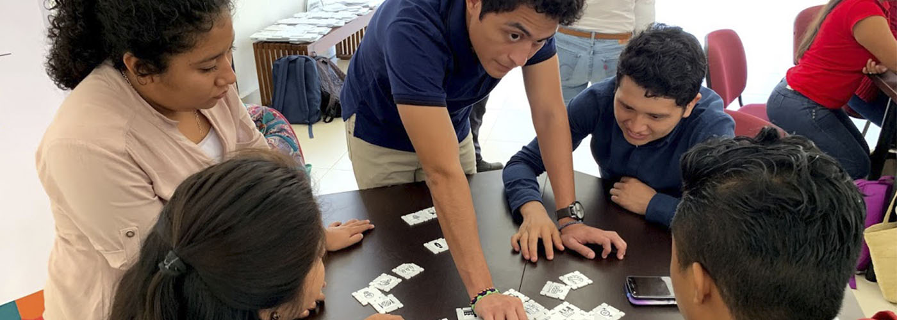
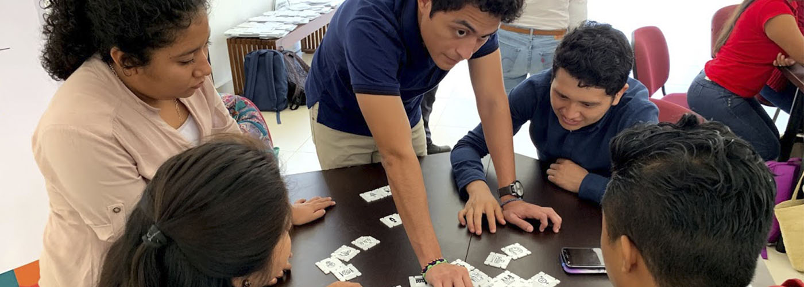

MAPEO DE INICIATIVAS CIUDADANAS
La metodología se enfoca en el mapeo de ideas de emprendimiento por medio de dinámicas basadas en los ejes sectoriales de Plan Estatal de Desarrollo.

El taller de duración de 6 horas por sede, planteaba una forma dinámica de participación ciudadana en cada una de sus fases, extrayendo la información necesaria para sumar al Plan Estatal de Desarrollo al igual de servir de capacitación para los participantes en cuestión del conocimiento del imaginario colectivo en relación a los problemas locales, conocimiento de los Objetivos de Desarrollo Sostenible de la Agenda 2030 de la ONU y la generación de ideas de emprendimiento a partir de procesos participativos.
Bajo este contexto, se realizarán talleres con una metodología dinámica de participación ciudadana con la finalidad de incentivar el interés de los participantes y obtener iniciativas emprendedoras. El taller se realiza bajo el siguiente esquema de actividades:
fases
- Inspiración: Los participantes trabajarán durante esta fase con los ejes sectoriales en equipo para, según su experiencia y percepción, identificar y jerarquizar los problemas prioritarios para su comunidad por medio de la dinámica. Las acciones a realizar en esta etapa son:
- Juego Estructuras Problemáticas.
- Exposición de experiencias propias.
- Ideación: Los participantes conocerán información para trabajar en las propuestas así como serán parte de una dinámica para generar una lluvia de
ideas referentes a las problemáticas para obtener estructuras de proyectos
factibles. Las acciones a realizar en esta etapa son:
- Formación de equipos de acuerdo a tema prioritario.
- Presentación de Objetivos de Desarrollo Sostenible de la Agenda 2030 de la ONU.
- Juego de Memorama de ODS.
- Presentación de Casos de éxito.
- Lluvia de Ideas con nubes ¿Como podríamos nosotros?.
- Implementación: En esta fase, los participantes asentarán la idea seleccionada en la fase anterior para desarrollar un poco más su funcionamiento y comprobación. Las acciones a realizar en esta etapa son:
- Rápido Modelo Canvas
- Prototipado Ágil
- Visualización: Presentación de resultados de los participantes y datos abiertos por medio de plataforma web. Las acciones a realizar en esta etapa son:
- Presentación de Ideas
- Síntesis y presentación de información.
 
